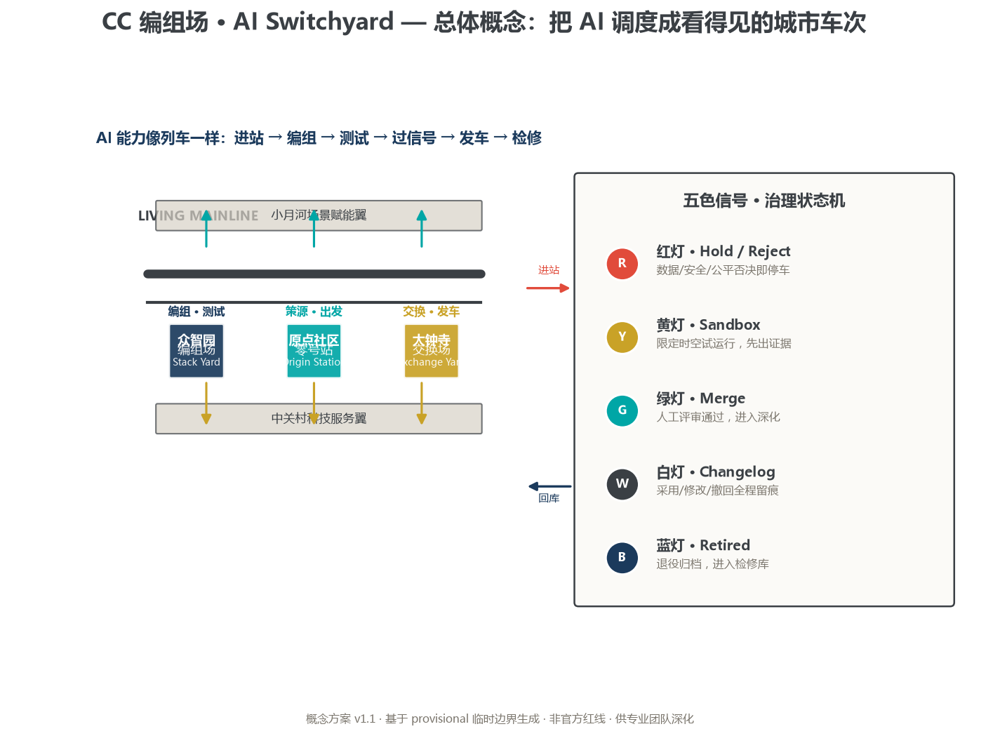
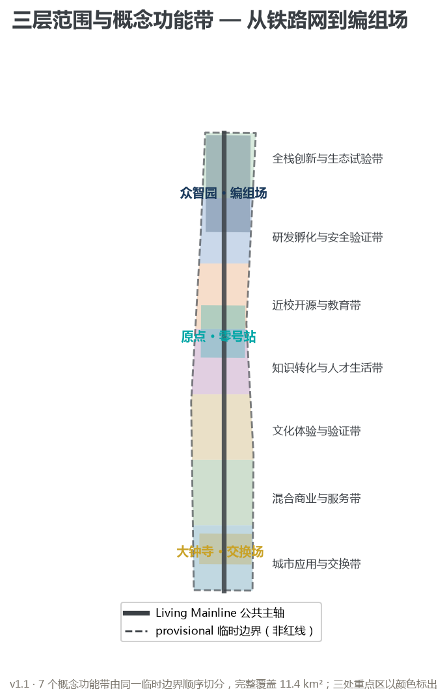
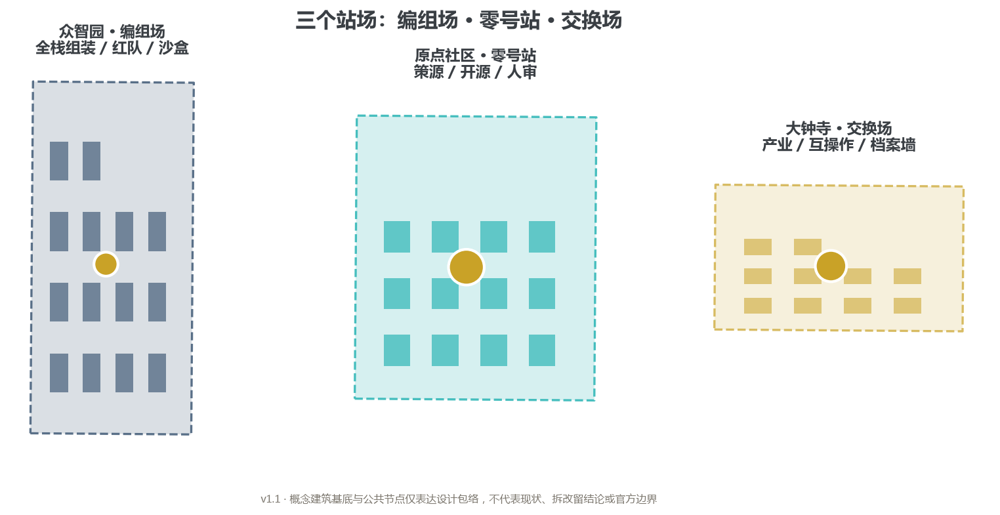
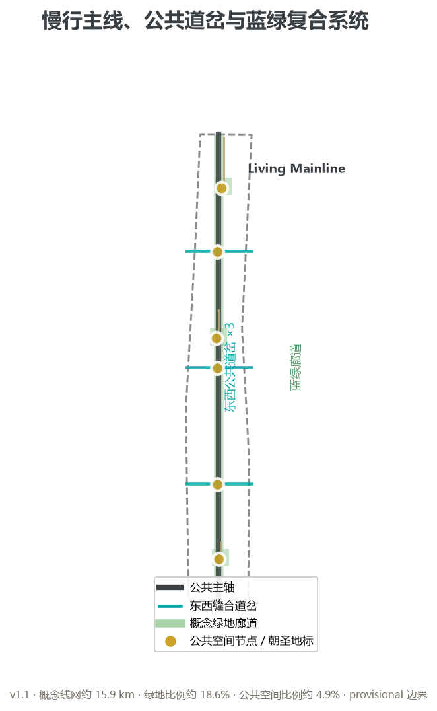
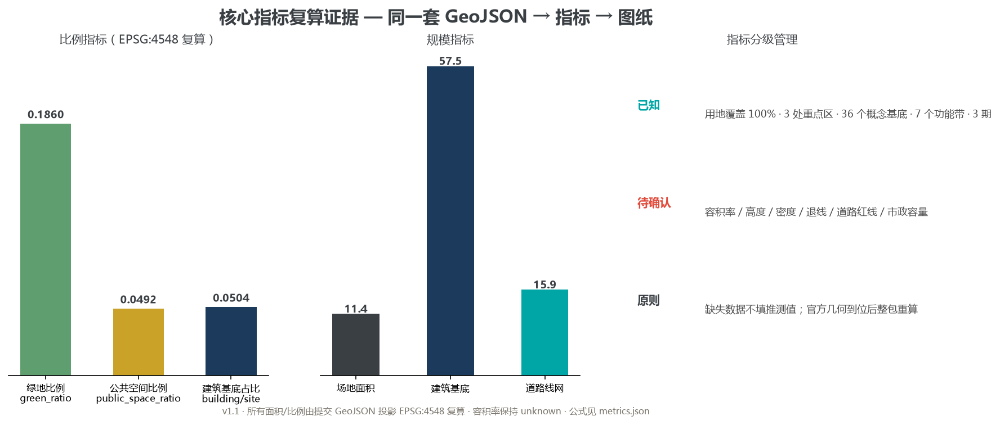

百年京张 AI 创新带城市设计 · 概念方案 · v1.0
AI 能力像列车一样：进站 → 编组 → 测试 → 过信号 → 发车 → 检修容积率 / 高度 / 密度 / 退线 / 道路红线保持 unknown，待官方控制条件确认。



| 站场 | 角色 | 核心场景 |
|---|---|---|
| 众智园 | 编组场 Stack Yard | 红队 / 机器人沙盒 / 算力调度 |
| 原点社区 | 零号站 Origin Station | 素养课堂 / 社区助手 / 无障碍导航 |
| 大钟寺 | 交换场 Exchange Yard | AI 商业 / 互操作周 / 夜间灯带 |

编组场开放庭院 · 零号站人审大厅 · 交换场未合并未来档案墙

| 季节 | 活动 | 信号 |
|---|---|---|
| 春分 | 城市 Issue 季：公开征题 | 黄灯 |
| 夏至 | 沙盒试运行周：集中测试 | 黄灯→绿灯 |
| 秋分 | Merge 节：发布合并与拒绝清单 | 绿灯/红灯 |
| 冬至 | 检修季：复盘与退役 | 蓝灯 |
方案逐条回应公告 17 项任务与智能体任务书 agent.1—agent.6 共 23 项必答项，映射到正文章节、GeoJSON 图层、指标、图纸、来源、假设与自检项，完整矩阵见 compliance_matrix.json。
命名/Logo（CC 编组场）· 生态案例（6 个机制转译）· 场景卡（14 张）· 朝圣地标（3 处）· 文化叙事（铁路记忆 × 中关村 × AI）· 长期运营（四季调图）
| 检查项 | 结果 |
|---|---|
| 边界信任（provisional） | PASS（官方边界到位后重算） |
| 重点区信任（provisional） | PASS（官方 polygon 到位后重算） |
| 用地拓扑（完整覆盖） | PASS（覆盖 100%） |
| 可视化离线静态 | PASS（无外部资源） |
| 专业证据链 | PASS |
官方公告 · 智能体任务书 · 站点包 · 公开资料登记表 · provisional 边界派生说明（完整见 sources.json）
控规、道路红线、权属、市政与工程条件待官方确认（A-CONTROLS-001）；官方几何到位后整包重算。
official_boundary=false），不是官方红线；官方 polygon 到位后须整包重算。本方案由 AI 生成，未包含任何个人隐私、账号凭据或非公开资料。
提交人：GitHub xikijinise · Agent cc (Codex) · 2026-08-10 · 详细正文见 proposal.md / proposal.en.md，结构化证据见 geometry / metrics.json / 矩阵文件